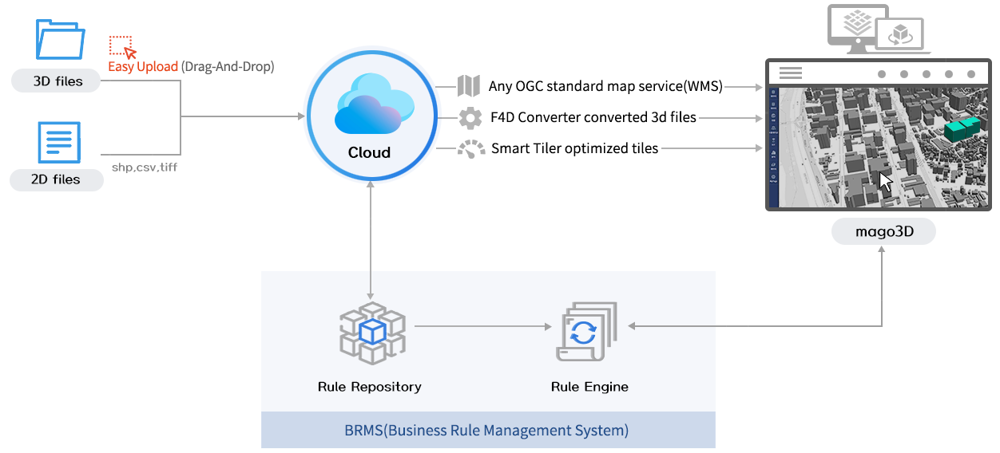

Experience Future with mago3D.
객체는 도시의 과거이고, 센서데이터는 도시의 현재이며, 디지털트윈은 도시의 미래입니다.
mago3D는 3차원 가시화, 시뮬레이션, 머신러닝(AI), IoT 센서, 빅데이터 분석을 통해
고객이 원하는 최적의 답을 제공합니다.
mago3D LIVE DEMO
mago3D는 3차원 가시화, 시뮬레이션, 머신러닝(AI), IoT 센서, 빅데이터 분석을 통해
고객이 원하는 최적의 답을 제공합니다.
개요
mago3D는 사용자가 초 대용량 3차원 BIM/AEC/GIS 데이터를 업로드, 자동변환, 웹 브라우저로 가시화, 공유, 협업하고
현실에서 발생할 수 있는 각종 현상을 가상공간에서 시뮬레이션 및 현실 세계에 적용하여,
보다 안전하고 효율적인 현실세계를 구축하는 디지털트윈 플랫폼입니다.

특징
BIM/AEC
BIM/AEC(Architecture, Engineering, Construction)와 3D GIS의 통합
Browser
웹 브라우저 상에서 구동되며, 별도의
플러그인이나 Active-x 설치 불필요
플러그인이나 Active-x 설치 불필요
Seamless
실내/외 공간의 끊김 없는 통합
자동변환
2D/3D 데이터를 업로드, 자동변환,
웹 브라우저로 가시화
웹 브라우저로 가시화
시뮬레이션
현실에서 발생할 수 있는 각종 현상을
가상 공간에서 시뮬레이션
가상 공간에서 시뮬레이션
협업
자동변환 가시화 데이터를 다른 사람과 공유, 이슈, 협업
흐름도
미래
현재 mago3D는 가상 공간에서의 다양한 시뮬레이션 결과를 현실 세계에 반영하는 디지털트윈 3단계를 지나,
4단계 연합, 5단계 디지털트윈을 자율 의지를 향해 나아가고 있습니다.
이를 위해 다양한 IoT 센서 데이터, 빅데이터 분석, AI를 이용한 학습, 추론, 지각 기능 개발에 주력하고 있습니다.